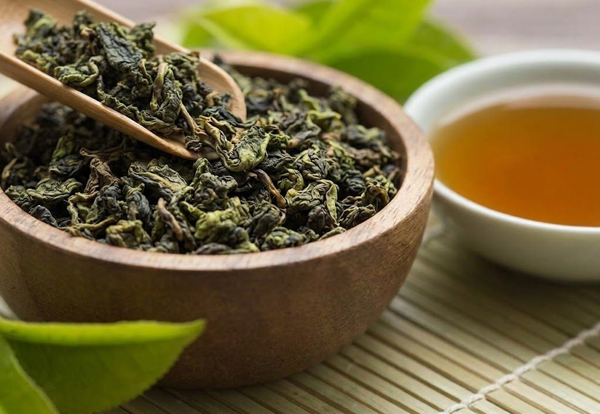

Те Гуань Инь бирюзовый улун · провинция Фуцзянь
Элитный полуферментированный улун с мягким расслабляющим и гармонизирующим действием.
Это не банальное опьянение, а тонкое изменённое состояние сознания:
- глубокое умиротворение и внутренняя радость;
- ясность ума и прояснение сознания, при этом тело расслабляется;
- ощущение лёгкости в голове и «волны расслабления» по телу;
- повышение настроения, желание медитации или вдумчивой беседы.